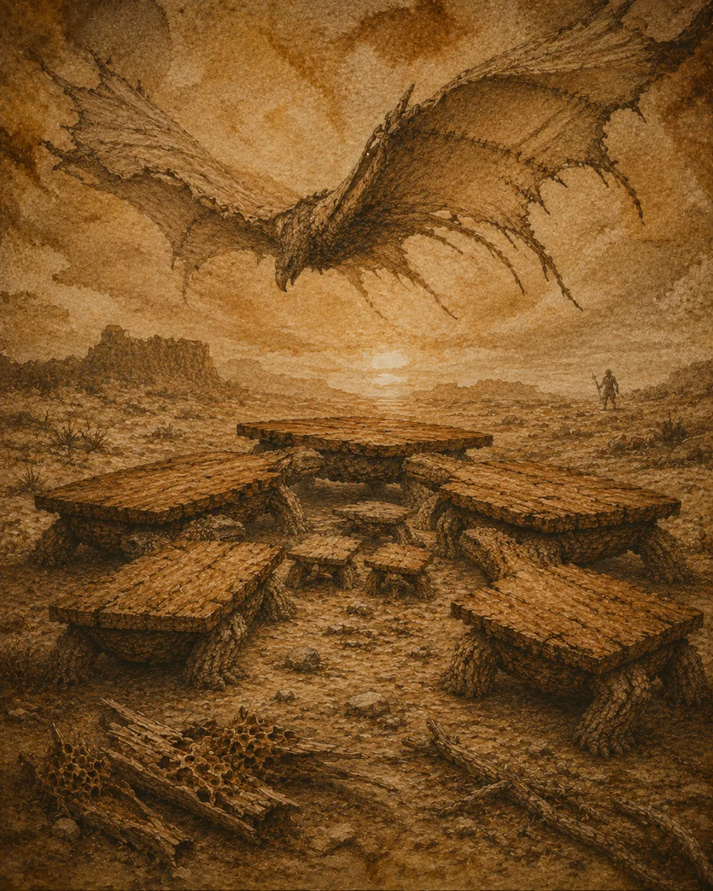

Menaces
Prédateurs
Massive mais lente, la table vivante a peu d’ennemis — mais ceux-là sont patients.

Trois dangers
La termite des steppes s’attaque aux pattes par en dessous et peut faire s’effondrer un adulte en une seule nuit de festin silencieux. Le bûcheron, prédateur bipède, traque les plus vieilles, dont le bois patiné vaut tous les trésors.
Mais la pire menace ne chasse pas : c’est l’humidité. Une saison trop pluvieuse, et les plateaux gondolent, les jointures cèdent. Contre elle, aucune fuite possible.
Le réfectoire serré
Pour se défendre, la harde se rassemble en cercle, plateaux tournés vers l’extérieur, les tabourets protégés au centre, et lance dans la nuit un tonnerre de grincements qui décourage les rôdeurs.
« On ne chasse pas une table. On attend qu’elle baisse sa garde — et les vieilles ne la baissent jamais. »